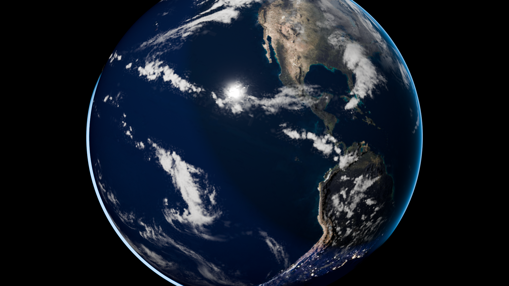

从浩瀚太空俯瞰我们的蓝色家园。本渲染精确还原了地球 23.44° 黄赤交角自转、晨昏线上的万家灯火、大气层边缘的瑞利散射蓝晕，以及独立运动的对流云系。

地球自转轴与公转轨道平面垂直方向有着 23.44° 的固定倾角。正是这个倾角使得太阳直射点在南北回归线之间周期往返移动，创造了地球上的春夏秋冬与两极极昼极夜。
太阳从侧方入射，清晰划分了昼半球与夜半球。在晨昏线（Terminator）背阳面，城市的万家灯火逐渐点亮，反映了人类文明的分布与繁华。
地球边缘呈现出空灵通透的蓝白渐变光晕。这是因为地球稠密大气层对较短波长的蓝紫色光线发生强烈的 瑞利散射，在太空中形成美丽的轮廓辉光（Atmospheric Limb Glow）。
模型采用独立外层球体承载云层与半透明云影。云层自转角速度设定为略快于地表（390° vs 360°），真实展现高空急流与大气对流活动带来的相对位移。